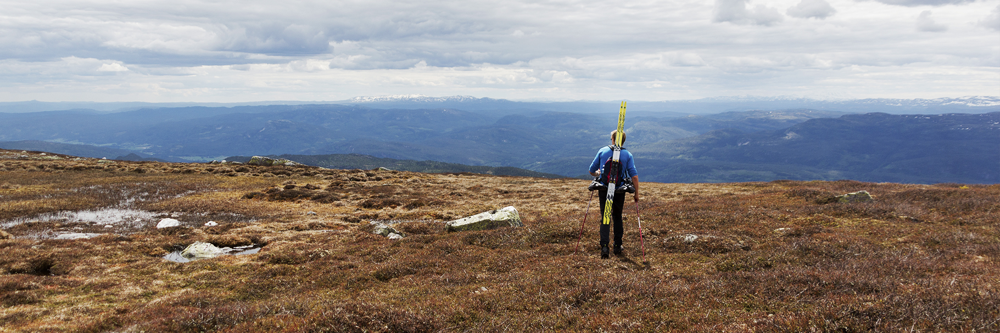

Store, solrike tomter på Norefjell
Unike og luftige tuntomter med panoramautsikt til salgs. Skiløyper rett utenfor døren, kort vei til alpinanlegg og fantastiske turområder. En unik mulighet for å realisere din hyttedrøm!
Ta kontaktOm Norefjell

En helårsdestinasjon
Norefjell har mye å by på utenom vintersesongen. Om sommeren er det flotte turområder, og man kan bade og fiske i Djupsjøen, eller ta en tur i spaet og klatreveggen på Norefjell Ski & Spa.
Beliggenhet
Norefjell er kanskje et av de mest sentrale høyfjellsområdene på østlandet. Bare litt over en times kjøring fra Oslo og Drammen, ligger Norefjell mellom Eggedal og Hallingdal.
Turmuligheter
Oppe på fjellet finner man flust av turstier, ski- og sykkelløyper. Man har blant annet mulighet til å se toppen av Høgevard (1459 moh.), som på en god dag kan gi utsikt over et område på 40 000 km2.
Djupsjøkollen
Beliggenhet
Tomten har adresse Djupsjøkollen 9, og har gårds-/bruksnummer 141/106. Se flere detaljer i kolonnen til høyre.
Du kan klikke her for å se hvor tomten befinner seg på kartet. Ta gjerne kontakt for mer informasjon.
Nedenfor er en film av utsikten fra tomten.
Detaljer
- Tomtestørrelse
- 1 786 m2
- Regulering
- Inntil 250 m2 BYA, utnyttelsesgrad 15% BYA, gesimshøyde maks 5 meter på hovedhytte
- Strøm
- Ja
- Vann/kloakk
- Ja
- Internettilgang
- Ja (4G)
- Pris
- 1 600 000,-
- Faste avgifter
- 14 900,- per år.
Dette inkluderer vann, avløp, renovasjon, brøyting, veivedlikehold, bombrikke for Djupsjøveien og oppkjøring av skiløyper.
Rakketjernfeltet
Beliggenhet
Tomtefletet ligger på høydedraget mellom Djupsjøen og Rakketjern. Her er det vill og vakker natur, og kun åtte minutter unna med bil, ligger Bøseter med hotell, spa-anlegg og slalåmbakke. Ti minutter unna finner man Norefjell alpinanlegg, i tillegg har man golfbane ved Noresund. Fantastisk turterreng sommer som vinter. Skiløyper i umiddelbar nærhet, med oppkjørte løyper til Bøseter, Norefjellstua og vestover til Tempelseter og Haglebu.
Ankomst
Kjør fra Drammen til Åmot og videre nordover gjennom Prestfoss til Eggedal. Følg veien fra Eggedal og opp til Norefjell/Djupsjøen. Cirka 300 meter før bommen ved Djupsjøen er det anlagt en ny vei opp til venstre. Her står det en informasjontavle med kart. Følg denne veien til toppen. Tomtene ligger mellom Djupsjøen og Rakketjern.
Se også kartet lenger ned på siden for å få et overblikk over hvor feltet ligger.
Klikk her for å laste ned kart med oversikt over tomtene.
Se FINN.no-annonsen, eller ta kontakt for mer informasjon!
Nedenfor er en film av en av hyttene som er satt opp på feltet.
Detaljer
- Tomtestørrelser
- 1 850 - 2 900 m2
- Regulering
- Inntil 400 m2 BRA
- Strøm
- Ja
- Vann/kloakk
- Ja
- Internettilgang
- Ja (4G)
- Pris per tomt
- Fra 1 400 000,-
- Faste avgifter
- 14 900,- per år.
Dette inkluderer vann, avløp, renovasjon, brøyting, veivedlikehold, bombrikke for Djupsjøveien og oppkjøring av skiløyper.
Dujupsjøfeltet
Beliggenhet
Tomtefletet ligger vakkert plassert langs Djupsjøen. Her er det fantastisk utsikt innover mot Storleinåsen, Gråfjell og ned på Djupsjøen. Kun åtte minutter unna med bil, ligger Bøseter med hotell, spa-anlegg og slalåmbakke. Ti minutter unna finner man Norefjell alpinanlegg, i tillegg har man golfbane ved Noresund. Fantastisk turterreng sommer som vinter. Skiløyper i umiddelbar nærhet, med oppkjørte løyper til Bøseter, Norefjellstua og vestover til Tempelseter og Haglebu.
Ankomst
Kjør fra Drammen til Åmot og videre nordover gjennom Prestfoss til Eggedal. Følg veien fra Eggedal og opp til Norefjell/Djupsjøen. Cirka 600-900 meter etter bommen ved Djupsjøen er det nylig blitt hugget et stort område til venstre for veien. På toppen av åsen og ned mot innkjøringen til venstre ligger tomtene.
Se også kartet lenger ned på siden for å få et overblikk over hvor feltet ligger.
Klikk her for å laste ned kart med oversikt over tomtene.
Ta gjerne kontakt for mer informasjon!
Detaljer
- Tomtestørrelser
- 3 400 - 4 200 m2
- Regulering
- Inntil 300 m2 BYA
- Strøm
- Ja
- Vann/kloakk
- Ja
- Internettilgang
- Ja (4G)
- Pris per tomt
- Fra 1 500 000,-
- Faste avgifter
- 14 900,- per år.
Dette inkluderer vann, avløp, renovasjon, brøyting, veivedlikehold, bombrikke for Djupsjøveien og oppkjøring av skiløyper.